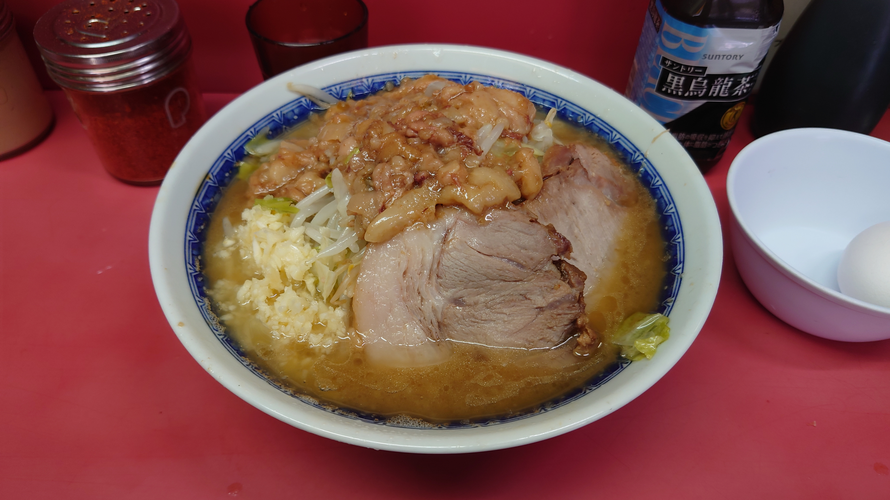

こんにちは、ザクザク食感です。
この前生まれてはじめて二郎を食べました！

独自のルールやマナーの話を聞くと行きづらくてSUSURU TVだけをずっと見続けていたので、ようやく行けてよかった。
味はまあ美味しいけど、人生で一度食べたら十分かな……すごく疲れました。
気になったものはとりあえず自分の目で見るようにしていたつもりだったけど、そう心がけることが「軽率に新しいものを見ない」って考え方に歪んでいたことに最近気づいた。
薬の力で動けるようにはなったけど、感覚的に自分とねじれの位置にいるものをあんまり見ようとしないで、10年ぐらい昔の自分が何をしていたかをなぞることばかりしていたかもしれない……
なんでもとにかくやってみるタイプの人ってかっこいい！ 自分でやろうと思っても心に慣性がかかってなかなか踏み出すことができないから、僕もそうしたい
それが自分に合うものでも合わないものでも、それらすべてが糧になって生きてるんだ～って二郎を食べて思いましたけど
言いたいことは全部ピノキオピーが言っていた
↑はリメイク版のアンテナだけど、アンテナ(アルバム)が出たのって8年前らしい やっべ……
それでは、さようなら。